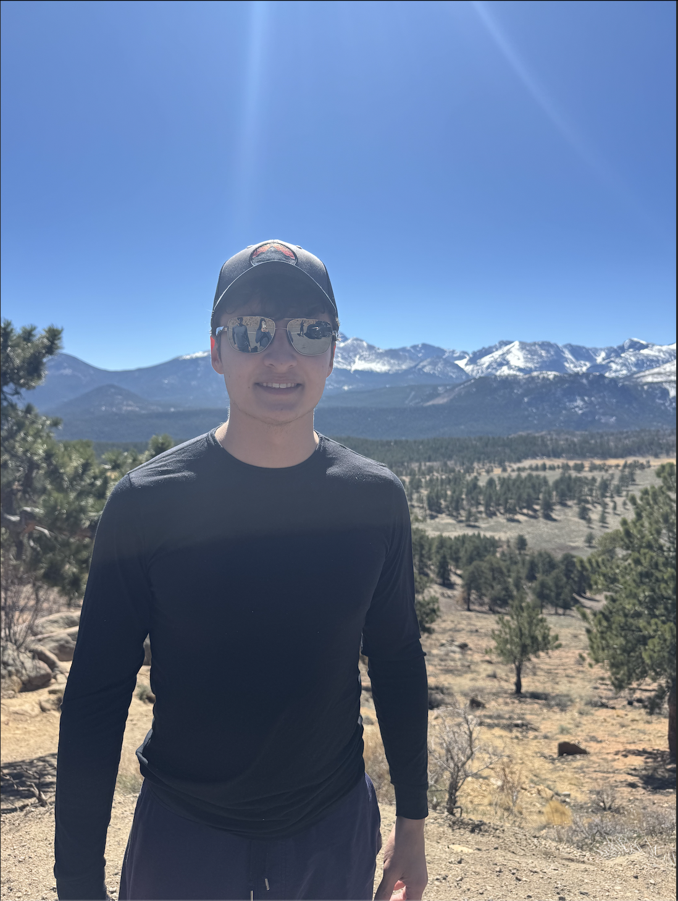

I am a researcher at the Weinberg Institute at the University of Texas at Austin. My research focuses on large scale numerical simulations of general relativistic spacetimes involving compact objects, with the wider goals of probing new dynamical scenarios and providing the scientific community with accurate gravitational waveforms for data analysis. I am currently interested in:
- Waveform generation for spacetimes involving so called exotic compact objects, such as boson stars
- Behavior of black holes in non-vacuum environments
- Increasing accuracy and efficiency of numerical relativity simulations
If you are interested, see my research tab for further details about previous and ongoing projects, and take a look at my Google Scholar for publications. Feel free to shoot me an email at jakedoherty@utexas.edu for any inquiries
